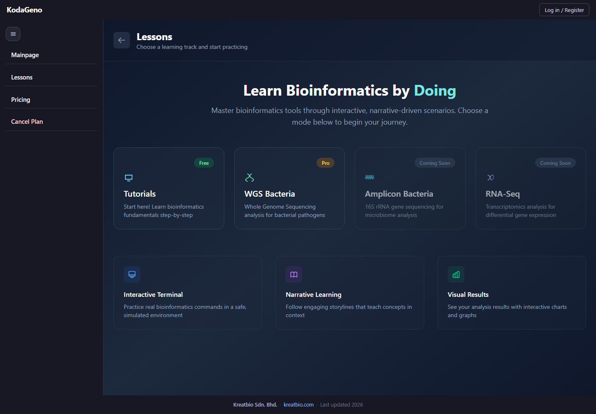

Institution delivery preview

KreatBio works with universities, training academies, and professional programs that need guided sequencing analysis training with clear setup, instructor access, progress reports, and renewal planning.

Define learner level, module scope, report timing, and launch date.
Set seat list, instructor accounts, learner invitations, and first-module timing.
Open cohort access, send invitations, and start the first lessons.
Send completion reports, activity summaries, and next-term recommendations.
Built for departments and centers that want sequencing analysis training inside semester teaching or structured lab programs.
Useful for private academies and specialist training groups that want guided bioinformatics lessons without building the curriculum from scratch.
Suitable for workforce upskilling, lab-transition training, and modular genomics education outside a full degree program.
Partnership discussions move faster when the delivery model, pricing variables, and expected handoff materials are stated clearly.
Programs are quoted against learner seat count, term length, branding scope, reporting needs, and whether KodaPure kits are bundled into the teaching plan.
Delivery can be scoped as a single cohort, a bootcamp-style program, or annual institutional access depending on how learners are scheduled.
Institutions review seat planning, instructor access, learner invitation flow, onboarding materials, and reporting cadence before launch is approved.
Come with learner numbers, term length, delivery format, branding needs, and whether wet-lab kit support is part of the program discussion.
Institutions should be able to see what gets set up, what gets reported, and how the reporting cycle works.
These are the minimum operational details needed before launch is approved.
The onboarding phase should end with a clear launch checklist, not just a verbal handoff.
Institution buyers should see the reporting shape before they commit to a term plan.
That gives departments a visible reporting rhythm instead of a vague promise of oversight.
Pricing usually depends on learner seat count, program length, branding scope, reporting needs, and whether KodaPure kits are bundled into the deployment plan.